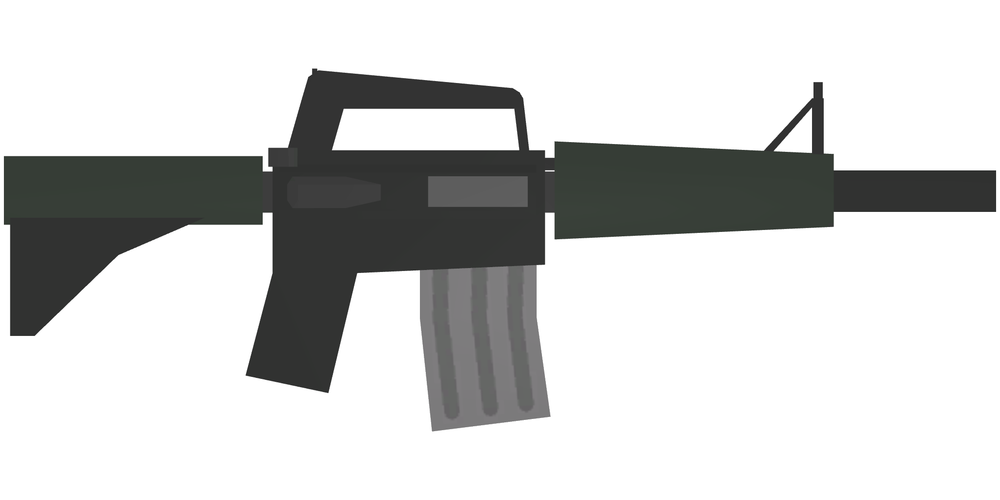
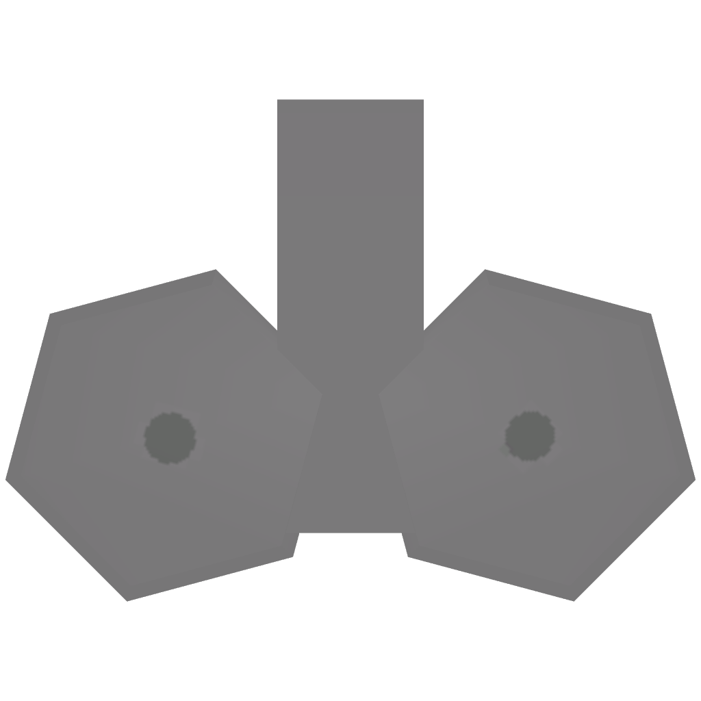
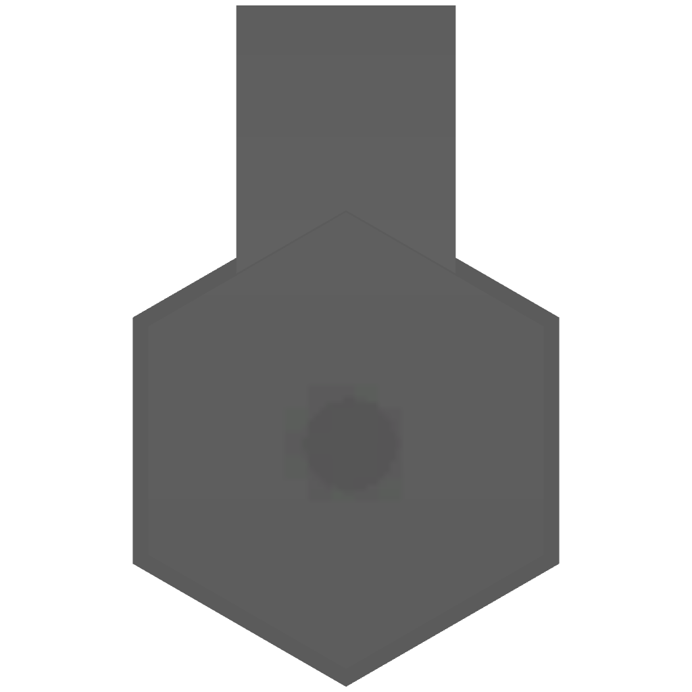
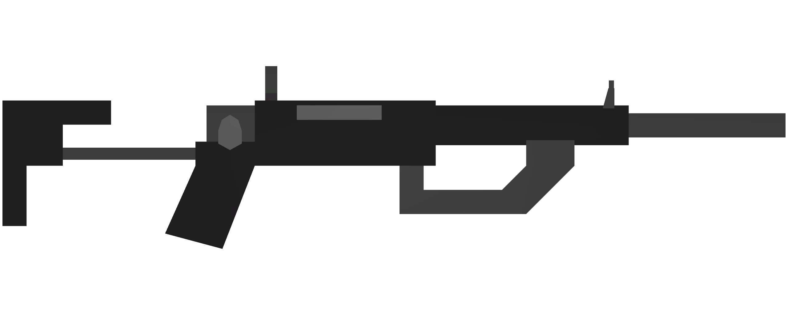
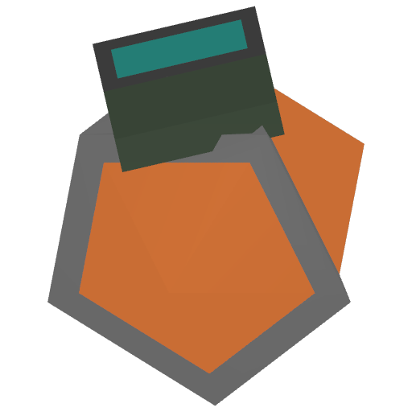
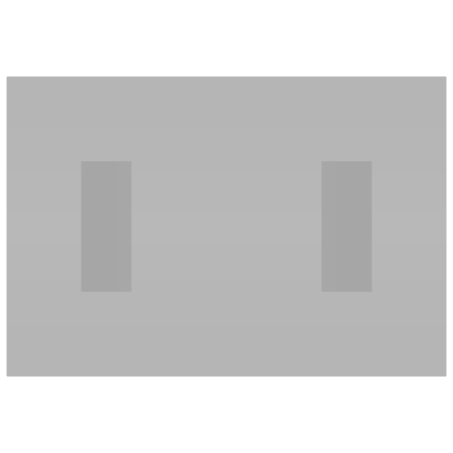

Concept — not wired up
Intermission screen
What used to fill the gap before a round actually starts. A Valorant-style agent-select beat: both rosters laid out side by side over av.png, so viewers can read who is playing, what they picked, and what they are up against — instead of watching "Starting soon / Loading teams…" sit on screen with nothing to look at.
Where this sits: replaces
#notStarted's current bare splash on
overlay.html, for the selectKitsTime window between a match being found and the
first round actually starting.
Data it needs that the live snapshot doesn't send today: each player's chosen
kit and powerup while picks are still being made — /match/overlay already has
this in params.userData, it just isn't rendered here yet.
Mock scenario: Casual Duo (two players per team, per mmconfig.json)
rather than the 1v1 Competitive shown in the first draft — a lone player next to a lone
"team name" didn't actually exercise the roster layout this screen exists for.
Nova
Starts in 0:22
Redline
Casual Duo · Alpha Valley
Ballistics On · Old Movement Off
Nova
ferret
Meta



Ammo
whisker
picking…
Redline
quorn
Sniper



Boom
delta9
Meta
 Doctor
Doctor

Doctor
Pending state: "whisker" above hasn't locked a kit/powerup yet — the card just
dims and reads "picking…" rather than guessing, same honesty rule the pick-screen rework
already applies (no faked pre-selection).
Countdown reuses
startsAfter from the match JSON, already sent
today. It sits in the notch's own label slot — where a round number or "MATCH POINT" would
read once the match is actually live — rather than as a separate bolted-on timer.
No responsive breakpoint: matching overlay-concept.html, the stage
is a fixed 1920px OBS capture, not a page fragment that needs to reflow for mobile.